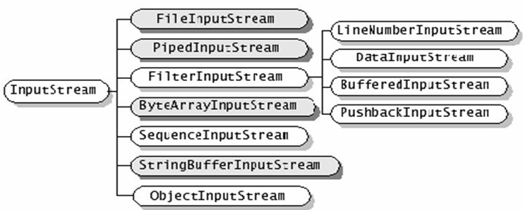
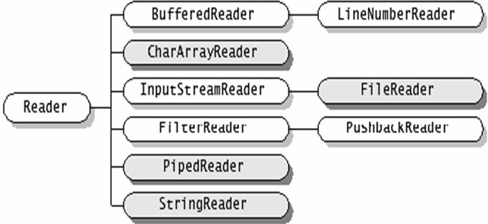

今天做项目的时候遇到了流的问题，一直以来都是模糊两可，今天查了些资料，整理在这里。
流的分类
流可以按照很多种角度进行分类：
按照处理的数据单位可以分为字符流和字节流
按照流的方向可以分为输入流和输出流
按照功能可以分为节点流和处理流
显而易见，字符流的处理单位就是字符，字节流处理的单位就是字节（byte）
流是有方向的，一般而言，我们将流入程序的称之为输入流，流出的称之为输出流
节点流就是直接操作文件/网络的流，比如说FileInputStream和FileOutputStream,他们都是从文件中读取或者是写入文件的流。（可以理解为节点流连接了程序和数据源）。而处理流则是对节点流（或者处理流，流可以进行多次处理）进行包装的流。通常来说，处理流是为了提供更强大的读写功能。比如说BufferedInputStream和BufferedOutputStream使用已经存在的节点流来构造，提供了带有缓冲的读写，提高了读写的效率（这两个就是使用Java写算法的时候的快读和快写）。DataInputStream和DataOutputStream使用已经存在的节点流来构建，提供了Java中的基本数据类型的读写功能，他们都称之为过滤流。
以下是四种抽象数据流，Java的所有的流都继承于这四个：
| 字节 |
字节流 |
字符流 |
| 输入流 |
InputStream |
Reader |
| 输出流 |
OutputStream |
Writer |
1.继承自InputStream/OutputStream的流都是用于向程序中输入/输出数据，且数据的单位都是字节(byte=8bit)，如图，深色的为节点流，浅色的为处理流。

2.继承自Reader/Writer的流都是用于向程序中输入/输出数据，且数据的单位都是字符(2byte=16bit)，如图，深色的为节点流，浅色的为处理流。

处理流类型常见的有：
缓冲流：缓冲流要“套接”在相应的节点流之上，对读写的数据提供了缓冲的功能，提高了读写效率，同事增加了一些新的方法。
字节缓冲流有BufferedInputStream/BufferedOutputStream，字符缓冲流有BufferedReader/BufferedWriter，字符缓冲流分别提供了读取和写入一行的方法ReadLine和NewLine方法。
对于输出地缓冲流，写出的数据，会先写入到内存中，再使用flush方法将内存中的数据刷到硬盘。所以，在使用字符缓冲流的时候，一定要先flush，然后再close，避免数据丢失。
转换流：用于字节数据到字符数据之间的转换。
仅有字符流InputStreamReader/OutputStreamWriter。其中，InputStreamReader需要与InputStream“套接”，OutputStreamWriter需要与OutputStream“套接”。
数据流：提供了读写Java中的基本数据类型的功能。
DataInputStream和DataOutputStream分别继承自InputStream和OutputStream，需要“套接”在InputStream和OutputStream类型的节点流之上。
对象流：用于直接将对象写入写出。
流类有ObjectInputStream和ObjectOutputStream，本身这两个方法没什么，但是其要写出的对象有要求，该对象必须实现Serializable接口，来声明其是可以序列化的。否则，不能用对象流读写。
还有一个关键字比较重要，transient，由于修饰实现了Serializable接口的类内的属性，被该修饰符修饰的属性，在以对象流的方式输出的时候，该字段会被忽略。